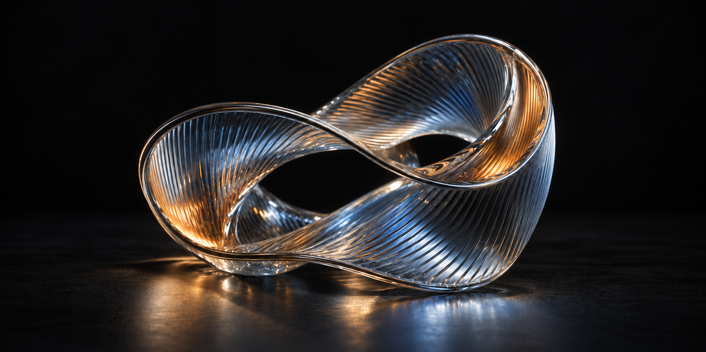

网站重做记录
这次重做从首页开始。上一版做了三个方向，其中深色版本的视觉效果更接近预期，但页面上的口号和提示太多，文字也不够自然。
新版保留深色背景，把作品放大。首页只显示名称、类型和日期；图形的操作控件放进作品详情。导航直接使用“项目”“文字”和“关于”。

先完成页面
网站主要用来放个人创作和项目，目前没有访问量要求。接下来会继续调整作品页和文章页，再接入已有的发布功能。
部署和域名会在页面确定后处理，AWS 学习暂时不作为前置条件。
这次重做从首页开始。上一版做了三个方向，其中深色版本的视觉效果更接近预期，但页面上的口号和提示太多，文字也不够自然。
新版保留深色背景，把作品放大。首页只显示名称、类型和日期；图形的操作控件放进作品详情。导航直接使用“项目”“文字”和“关于”。

网站主要用来放个人创作和项目，目前没有访问量要求。接下来会继续调整作品页和文章页，再接入已有的发布功能。
部署和域名会在页面确定后处理，AWS 学习暂时不作为前置条件。